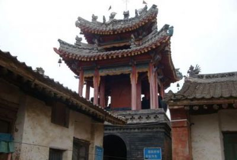
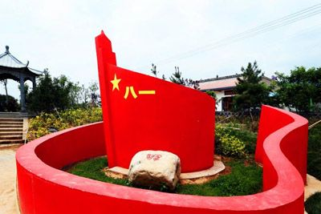
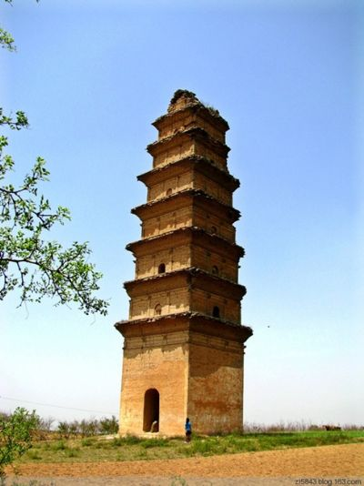
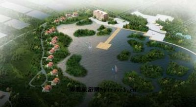
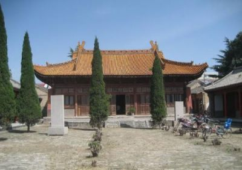
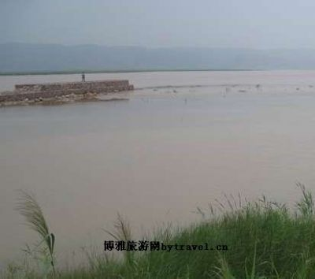
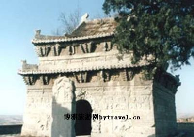
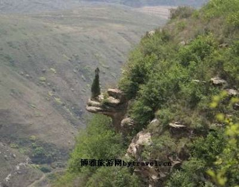

一叶落而知天下秋
秋天，一个充满着收获和希望的季节
同时也是一个最适合旅游的季节
也许正是这份舒适让我们迫不及待
融入大自然演绎的秋景、秋韵之中
一起去感受浪漫唯美的秋天
那么，你准备去哪里旅游呢？
let's go
|
洽川景区在中华民族母亲河的怀抱里,有一颗明珠,这就是陕西省洽川风景名胜区。洽川，位于渭南市合阳县城东20公里的黄河二级台地上,总面积165平方公里，素有“小江南”之称，是我国黄河流域最大的湖泊型湿地、著名的自然风景名胜区。 洽川风景名胜区，依地形地貌特点，可分为黄河滩涂、水乡田园、莘塬山岳、东雷抽黄、森林屏障等景区。景区内自然景观与人文景观相融合，历史遗迹和现代工程相辉映，内容丰富，品位极高。 洽川黄河滩涂湿地约15万亩，生长着茂密的芦苇、沙蓬、野蒲和各种水草，一望无际。湖泊星罗棋布，水路扑朔迷离，鱼虾成群，鸟语花香。 广袤丰富的水草资源和幽静神秘的自然环境，使洽川成了鸟的乐园。这里常年栖息着灰鹤、鸳鸯、白鹭等鸟类，每年冬季，成千上万的丹顶鹤、天鹅等珍禽来此越冬。 景区内有瀵泉七眼，为合阳县所独有，被誉为“华夏一绝”。瀵泉在古籍中多有记载，《列字》中称其“味过醪醴”，“沐浴神瀵、肤色脂泽。”瀵泉属喷发型温泉，含有氮、磷、钾、锶、硒、铜等矿物元素，常年水温在29-31摄氏度，日出水量为7.3万立方米。以其灌溉农田，可以增加土地肥力；以其洗浴，可以去病健身。这七眼瀵泉自北向南分别是夏阳瀵、处女泉、西鲤瀵、渤池瀵、熨斗瀵、王村瀵和子瀵。 处女泉又名东鲤瀵，在七眼瀵泉中最为神奇。当地有一个古老的风俗，姑娘在出嫁前都要到此泉沐浴，故名“处女泉”。处女泉实际是一个泉群，大小泉眼不计其数。站立泉边凝视，可见泉水冲起金黄色细沙，宛如一只巨大蝴蝶，因此有人称为“蝴蝶泉”。此泉的神奇还在于人入水不沉，泉涌沙动，如绸拂身，被誉为“沙浪浴”。七汪瀵泉，是七个天然的浴场。泉水清澈如镜，鱼虾戏游，蓝天白云倒映其中。堤边垂柳成荫，芦苇环绕。在此游泳沐浴，垂钓赏景，乐趣无穷。 水乡田园景区，处于莘塬脚下。这里万亩荷塘、良种渔场、蔬菜大棚、层层叠叠，铺天盖地。荷花竞放，芳香漂浮，令人留恋往返。良种养渔场有罗非、红鲤、鳗鱼等优良品种，甲鱼养殖破具规模，已经成为陕西省特种养殖和出口创汇的重要基地之一。 莘塬山岳是洽川西沿的黄土丘壑峰峦，由北向南依次有明山、光济山、金风山、天柱山、莲花山和秦驿山，许多美丽的传说为洽川自然风景增添了无穷魅力。站立山顶向东眺望，洽川风光尽收眼底。清代洽川才子许秉承有诗赞美天柱山道“拔地峰如柱，穿云庙接天。窗迎雷首月，户望禹门船。” 洽川历史悠久，文化底蕴丰富。景区发现有远古生物化石和多处新石器时代遗址,有五帝之一帝喾的陵墓。又据史料记载，商初名人伊尹入仕前曾在洽川一带躬耕，至今洽川乡民仍对伊尹耕莘的故事津津乐道。公元前21世纪，夏启曾封支子与莘，建有莘国，其封地即在今洽川一带。其后，周文王曾娶洽川女太一为妃，生周武王。相传大禹的母亲、尚汤的妃子和周文王的母亲也是莘国人，人们称她们为“四圣母”。合阳在战国时期属魏西河之地，相传孔子七十二贤之一的子夏曾来此地设教授徒。其他有名的古迹遗址还有秦驿山的秦代驿站遗址，韩信木罂渡军的夏阳古瀵，清代洽川才女史夫人雷敬儿故居等。代表汉奴隶最高成就的书法瑰宝《合阳令曹全碑》明代万历年间在洽川莘野村出土，现收藏于西安碑林。 洽川西塬畔上灵泉村东南的福山，是渭北风景胜地，早有“秀夺江南”之美称，福山因其形状一只翘首前行的巨蝎，又称“蝎子山”。山上的古建筑现存大雄殿、送子殿、圣母殿、三义殿、药王殿、玉皇殿、文昌阁、三清殿、钟楼、鼓楼、转角楼、石牌坊等。山上既有佛殿，又有道阁和儒家书院，集儒、道、释三教为一体。这种三教和平共处的现象实属罕见，已经引起了专家学者的极大兴趣。此山建筑布局具有江南园林紧凑玲珑、错落有致、步移景换的建筑特点，是洽川旅游的有一去处。 洽川风景区南北两端，分别代表人类改造自然成果的森林屏障和抽黄工程。作为“三北青年防护林工程”的组成部分，这里的防护林受到了中央三部委的高度称赞。抽黄工程则作为亚洲扬程最高的抽水工程而载入史册。 门票价格： 旺季:60淡季:60 咨询电话： 0913-5621158 邮编： 715301 景区地址： 合阳县洽川镇 |
|  |
合阳福山福山景区位于合阳县灵泉村附近，福山的地貌十分特殊，整座山就像一只翘尾东行的大蝎子趴在沟壑中，所以当地人形象地称它为“蝎子山”，民间有“聚宝盆、福寿山，蝎子趴在盆中间”之说。2001年航拍洽川景区时，从没来过洽川的拍摄人员开始还担心在空中找不准福山，可是飞到这里，一眼就看到一只祥云缭绕、活灵活现的大蝎子，他们马上认准了这就是福山。 福山让人称道的，不仅是它独特的造型，关键在于它的“三教合一，和睦相处”。在这座山上，供奉着佛教的释迦牟尼，道教的老子，还有儒教的孔子，这种奇特的现象在我国十分罕见。 福山上有一组精美的古建筑群，紧凑玲珑，错落有致，穿行其中，步移景换，回味无穷。福山古建筑群，始建于明万历二十三年(1595年），至康熙六年（1667年）间，屡加修葺。清同治六年（1867年），前后殿和两庑俱毁于战火，光绪八年（1882年）进行了重修，恢复了原有的建筑，并新建了三清阁、奎星阁、土地亭和奎星塔。现存的古建筑群亭阁、殿宇、牌坊错落有致，灵官、天王、佛祖栩栩如生，香烟缭绕，磬声悦耳。这里的签很灵，方圆百里的群众都到此烧香问卦，香火很旺。 景区地址：陕西省渭南市合阳县坊镇灵泉村附近 乘车线路：合阳县乘开往洽川镇的班车中途可在福山下车可达。 门票价格： 旺季:30淡季:30 咨询电话： 0913-5625598 邮编： 715301 景区地址： 合阳县坊镇灵泉 |
|
 |
初心公园合阳县“初心公园”是合阳县委依托红26军在合阳的革命活动这一红色资源优势，重点打造的红色革命教育革命基地。1935年6月8日早，中国工农红军第26军42师骑兵团由澄城县进入合阳县境内，驻扎甘井镇屯里庙，吓跑国民党甘井镇长朱文宣，俘获处死副镇长郭明初，将财东张适之、舍儿、张德保的财物分给贫苦群众，受到广大贫苦群众热烈拥护。项目位处合阳县甘井镇城后村，规划占地107亩,总投资3000余万元，用50多个微场景真实还原中国共产党发展历程中重要节点、重大事件。 同时，初心公园作为渭南市首个“党史教育主题公园”，是甘井镇落实县委“党建+3c”工作思路，探索“党建+扶贫+旅游”发展模式，运用产权制度改革成果发展乡村旅游的一项重要举措! |
|
 |
罗山寺罗山寺塔又名岱堡塔，位于陕西省渭南市合阳县和家庄镇东马村西南，此塔建于晚唐，据现在已有1500多年，陕西省级重点文物保护单位，渭南市10大最佳旅游景点之一。 罗山寺塔又名岱堡塔，位于合阳县和家庄镇东马村西南约1000米的乳罗山东峰。乳罗山从东往西绵延5公里多，从澄城的寺前镇顺108国道进入合阳县境。向北远远望去，只见东西二峰如同双乳罗列在大地上，所以得名“乳罗”。清代合阳人王省所著《合志辩驳》中这样写乳罗山：“自山南远望，真如两乳罗列。比兴安府汉阴县之双乳山，尤觉有情。”在正塔的不远500米处各有两土塔，塔前原有罗山寺，塔原为九层，现存七层半，塔高30米，塔内原有木梯可登，现已损坏，塔四壁外侧有砖砌隐柱，一至四层檐下有一斗三升斗拱，此塔建于晚唐时代，据现在已有1500多年的历史，1992年定为省级重点文物保护单位。 “三山不出头，二水不行舟”，这是清光绪年间合阳县令段士聪所总结的合阳地貌特征。“水不行舟”容易理解，是指合阳境内的金水和徐水水量都很小，只不过是两条小溪而已。所谓“山不出头”，是说合阳的山都是土山或土石夹杂的山，从远处看就像浑圆的大馒头，不像外处的石山那样陡峭，峰插云天。 收藏在北京图书馆善本书库中明嘉靖二十年魏廷揆所撰的《合阳县志》，系汲古阁旧藏，属海内孤本，是目前所能见到的编纂最早的合阳地方志。该书在“山川”部分记载“乳罗山”时有这样一段话：“乳罗山，县南三十里。相传一货郎过此山，得青卵焉，置之箱内，脱壳为蛇。驯畜稍大，复置之故处，名其蛇曰乳罗。乃后截道噬人甚厉，方左众觅货郎，使禁之。货郎著刃于地，叮咛作念。蛇引颈自刎而死。”货郎为民除害，其义可钦；乳罗知罪自裁，其行可敬。 乳罗山东峰俯瞰金水河，风景优美。明末清初的“关中八高士”之一李灌（向若）不愿与清朝统治者合作，隐居于此，凿崖而居，开荒种地，称曰“小桃花源”，以当年的靖节先生陶渊明自况。与李灌同时代的女诗人雷敬儿（史夫人），丈夫负气离家出走，有人说出了家，她寻夫到此地的罗山寺，拔下头上的簪子，在砖墙上刻下了“寺野钟声远，山荒风雨多”的诗句。罗山寺始建于唐代，规模宏大，据传可与西府的法门寺媲美，曾有“西有法门寺，东有罗山寺”之说。罗山寺在上世纪50年代拆除，木料砖瓦盖了学校，刻有史夫人诗句的那些青砖也不知去向，如今只有一座建于晚唐的方形空心砖塔，名罗山寺塔，系陕西省重点文物保护单位。在塔的左右两侧各有土塔一座，三塔并立，形如笔架。过去讲究风水，罗山寺塔选址高敞，在合阳县南、东南都可以看到，称为合阳文峰，但又觉一峰太孤，遂有在明代任过察院的仵魁倡议，于清顺治十年（公元1653年）筑此两座土塔，以补合阳文脉。 参考阅读： ·第七批全国重点文物保护单位 |
|

|
洽川生态园陕西黄河湿地公园洽川生态园项目，由陕西黄河湿地公园有限公司投资建设。项目位于合阳县洽川风景区黄河南滩，占地面积8平方公里，是洽川国家重点风景名胜区的一部分。区内地势平坦，园区东部和南部保存有几片完整的黄河生态湿地，湿地内芦苇生长茂盛，水草丰富，芦荡内栖息着灰鹤、白鹤、野鸭、天鹅、鸳鸯等20余种珍稀鸟类。根据园区总体规划和详细规划，陕西黄河湿地公园洽川生态园项目遵循保护、发展、和谐的原则，认真贯彻“严格保护、统一管理、合理开发、永续利用”的指导方针，园区总体布局实现了半自然半人工与生态的完美结合。 洽川生态园项目分为乡村休闲旅游区、农业观光示范区、传统渔业养殖区、生态湿地游憩区、湿地渔业养殖区和生态湿地保护区六大功能区。陕西黄河湿地公园生态农庄一期开发的是乡村休闲旅游区、生态湿地游憩区和传统渔业养殖区，一期开发计划投资3800万元。 2006年11月29日该项目经陕西省建设厅报建设部备案后，省建设厅批准此项目动工建设。在整个项目的报批过程中，得到了省、市、县各级领导的关心和支持，尤其得到了渭南市委市政府、合阳县委县政府、洽川风景名胜区管理委员会及合阳县各相关部门的鼎力支持。在此过程中，经上述各级领导多次与建设部、陕西省建设厅的沟通，该项目才能得以顺利批准。 项目获批以后，我公司立即着手进行筹建工作。筹建主要内容包括一个 1000亩水面的湿地生态湖泊，15栋造型别致的别墅型单体农舍，1栋主要功能为游人接待中心的乡村俱乐部，可容纳1000辆车的大型停车场，路基宽15米的主干道硬化、园区绿化、配套的员工中心以及急流勇进、水上娱乐、4D影院、拓展训练、沙地越野、沙滩摩托、浑水摸鱼、演艺广场、游船项目等配套游乐设施等等。 建成后的陕西黄河湿地公园将集休闲、度假、观光、游乐、住宿、餐饮、会议、培训等为一体，有各种档次的客房150余套，拥有可容纳320人的大型会议室和不同人数的小型会议室。可单次接待住宿、餐饮300余人，竭诚为政府、企业以及社会团体提供高档次的商务服务。同时，游人可在湿地公园内赏花、观鸟、垂钓、游泳，充分亲近自然，陶冶性情，感受远离城市的悠然。 目前，公司下设工程部、财务部、游乐项目部、环卫部、行政部、航天育种基地等部门，公司全体员工齐心协力，在杜康集团及黄河湿地公园领导班子的领导下，以饱满的精神状态为黄河湿地公园的建设尽最大的努力。我们相信，陕西黄河湿地公园在渭南市委市政府、合阳县委县政府和杜康集团的领导下，一定会为洽川国家级重点风景名胜区的建设以及合阳的县域经济发展做出应有的贡献。 |
|
|
处女泉处女泉原名东鲤瀵，又名伏鱼泉，《合阳县全志》等地方志中多有记载，但多年以来一直没于黄河之中，使人难识庐山真面目，直到上个世纪七十年代修建的东雷抽黄工程防护堤，逼黄河水改道东移，处女泉才重新显现出其身姿。1991年5月，《陕西日报》记者杨玉坤在当地有关同志的陪同下，对这一奇泉进行了考察，并在《陕西日报》显著位置披露了这一发现，处女泉才得以“娇容”重现。 处女泉的名字来源于洽川一个古老的民俗传说。洽川是周文王母亲太任的家乡，也是伏羲画卦的地方。文王仰慕伏羲，也喜欢推演八卦。他常被黄河边这迷人的风光所吸引，也常置身于万顷芦荡之中，演卦诵诗，悠闲自在。有一天，他在芦苇丛中散步，突然发现有一绝色女子在雾气蒸腾的泉水中嬉戏。蓝天白云下，茂密的芦苇围成的天然屏障，让女子的婀娜身姿若隐若现，那景象真是美极了。文王为此所吸引，更为姑娘的美貌所折服，这姑娘就是太姒，后来便成了文王的妃子。这泉就是东鲤瀵，据说太姒姑娘经常来此泉沐浴，所以才出落得闭月羞花，沉鱼落雁。一方水养一方人，洽川自古多出美女、才女，而太姒更是其中的佼佼者。后来在当地形成了一个风俗，凡姑娘出嫁前，都必须来这里沐浴，祈求带着泉水的灵气与滋润，去迎接人生道路上幸福美好的时刻，所以当地群众称此泉为“处女泉”。 处女泉实际上是个泉群，大小泉眼无数。大者如车轮，小者如蚁穴，水的浮力极大。站在泉边凝视，可见泉底水冲起了金黄色的细沙，宛如一只只巨大的蝴蝶，又名“蝴蝶泉”。水温常年保持在30度左右，每到冬季，雾气腾空，绵延十里不绝，置身其中，如饮甘醴，飘飘欲仙。泉水富含硒、铜、锶等多种有益于人体的微量元素，经常洗浴，可以祛病强身、延年益寿。处女泉不仅是温泉、保健泉，更为独特的是它的“沙浪浴”。处女泉水不象一般泉水那样汩汩涌流，而是从覆盖泉眼的沙层中涌出，如果踩在泉眼上，泉涌沙动，如绸拂身，会让您感到无比畅快。记得当时陕西日报记者杨玉坤来的时候正是黄昏，后来就写了一首诗：一道残阳铺草滩，共坐牛车探奇泉。天色天籁无限好，入水飘飘欲成仙。道尽了“沙浪浴”的美妙和神奇！ 四季的处女泉景色各异，风韵万千，陶醉了无数游客，其周围秀丽迷人的风光，更是吸引了众多的影视工作者。中央电视台、陕西电视台拍摄的电视连续剧《神禾塬》、《走进八里堡》、《黄河如歌》，民俗专题片《出嫁的新娘》，由著名表演艺术家陈道明、李琳主演的电影《桃花满天红》等，都曾以这里作为外景拍摄地。著名作家贾平凹先生游处女泉后，还即兴作诗一首“万亩芦苇风掀起，处女泉里水凝脂。华清只供帝王去，哪及群民乐游此。” |
|

|
合阳文庙合阳县博物馆位于合阳县城文庙内，是1989年5月由合阳县文化馆分出后正式成立的一座集收藏、保护、研究、教育、考古调查等于一体的县级博物馆，隶属于合阳县文化局。 馆址所在地合阳文庙，创建于北宋元枯八年（1093年），前庙后学，规模宏大，是一组具有较高历史价值和艺术价值的宋明古建筑群。主体建筑现郁成殿、明伦堂、尊经阁以及两斋、两庑、两厢，占地面积6750平方米，建筑面积2173平方米，是合阳现存数量最多，规模最大的古建筑群，1992年4月20日由陕西省人民政府公布为省级重点文物保护单位。 大成殿始建于北宋大观年间，重建于明洪武二年，单檐歇山顶，风格古朴厚重，具有明显的明初建筑风格和地方特色，是明代建筑艺术的重要实物资料。殿前西侧竖有复刻的《汉合阳令曹全碑》，东侧竖有清乾隆32年镌刻的《重修学宫碑记》。 尊经阁位于大成殿以北，为建于高台之上的三层楼阁式木构建筑，创建于明万历初年，建筑形式为重檐歇山顶，阁体通高20米，拱斗交互，飞檐凌空，显得高大宏伟，巍峨壮观，在我省同类建筑中尚属罕见。阁前户侧竖有《雷简夫荐三苏纪念碑》等碑刻，1998年立。 建馆以来，通过征集、捐赠等各种途径，合阳县博物馆藏品不断得到充实丰富，现共有藏品784件（组），其中，国家一级文物7件（组），二级文物5件（组），三级文物27件（组）。藏品涵盖瓷器、陶器、石器、玉器、金属器、书画等11个大类。其中以彩陶罐、绿石铲、绳纹大陶鬲为代表的新石器时代文物，以夏阳邦工鼎、鸭头铜壶为代表的战国文物，以朱书陶盆、博山炉为代表的汉代文物，以砖塔铭残石、唐三彩扁壶为代表的唐代文物，以耀窑月白釉玉壶春瓶、耀窑仿建油滴釉碗为代表的宋金瓷器，以一刀平五千为代表的王莽货币等文物，具有很高的艺术价值。在文博界享有盛名，此外，清后期至民国年间一批10128册的古图书也是馆藏精品，是研究历史的珍贵资料，是合阳历史文化进程的重要佐证。 合阳县博物馆曾在在建国50周年时，在文庙尊经阁成功举办了“合阳文物精品展”，受到了社会各界人士的一致好评，取得了良好的社会效益。目前正在维修展室，暂无陈列。展示维修竣工后，拟主要通过对馆藏文物的展出和地面现存遗迹的介绍，向观众全面展示合阳县的历史沿革、风土人情和文物古迹。 交通指南 景区地址：陕西省渭南市合阳县东大街02号 乘车线路：合阳县租车或步行至东大街可达 |
|

|
夏阳黄河古渡夏阳黄河古渡位于陕西合阳县东２０公里处的夏阳村，隔黄河与山西省临猗县吴王渡相对，因楚、汉相争时，汉淮阴侯韩信从这里用木罂渡军，攻取魏都，故又称“木罂渡”或“淮阴渡”。合阳县灵泉村尚有“木罂渡军处”遗址。夏阳村有木罂诗碑一通，为清初刻置，横长０．８米，竖高０．３８米，上刻诗云：“淮阴往事执平云，高帝何尝尽负臣。功就从龙嫌震主，势成履虎欠抽身。松间落叶推同辈，湖上烟波让古人。瞬息弓藏惊幻梦，木罂渡口迄难湮。” 黄河小北干流从韩城到潼关１３２．５公里河道，是秦、晋两省的界河，地势平坦，水流平缓，两岸土地肥沃，人口稠密，物产丰富，工农业、商业贸易兴旺发达，社会经济繁荣昌盛，沿河设有不少大小渡口，夏阳渡就处在这一地带中心。这一地域史称西河，西接秦地，东通晋、燕、赵国，地理位置十分重要，历来为兵家必争之地。 秦末楚、汉争雄，相持于成皋，汉高祖三年（前２０４年），魏王豹反汉，从背后袭汉，形势危急，汉淮阴侯韩信指挥大军灌婴带领１万兵马和百只渡船，在下游临津渡假装渡河，迷惑魏军，自己和曹参率领大军悄悄开到夏阳。韩信命人在当地收买大批大肚小口的陶罐（古称罂），再用木棍夹住，扎成木筏，称为“木罂”。准备妥当后一声令下，千军万马乘木罂渡过黄河，直逼魏都安邑，活捉魏王豹，再战燕赵，遂解成皋之急。从此，夏阳渡一时名声大震，人称“木罂渡”或“淮阴渡”。明万历年间商丘人刘应卜的《吟淮阴渡》写道：“木罂飞渡列艨艟，相距蒲津让首功。坛上英雄随水去，涛声犹似战河中。”该渡不仅是秦、晋的军事要冲，又是水上商业码头，十分繁荣，现仍有木船渡人。 |
|

|
玄武庙青石殿玄武庙青石殿位于合阳县城西南10.5公里处的王村镇南王村西北。该殿自明万历四年开始创建，至三十二年竣工，历时二十八年，是陕西省仅有的纯青石大型建筑，对研究我国古代建筑和石雕艺术有重要的实物资料价值，1984年公布陕西省重点文物保护单位。青石殿选址在大浴河东塬畔的一座土岗上，岗顶面积约一亩左右，四周筑有护墙，称为“山院”。进山门后有五孔砖砌窑洞，分别是三官、玉皇、药王、雷神、三清诸神。登上70级石阶，便是青石殿。 青石殿高约10米，占地面积64平方米，用700余块巨石砌成。殿仿木结构，重檐歇山顶，殿门向南，正面刻八仙人物、麒麟等浮雕。殿门抱框升龙；券门正中上方刻一单龙戏珠，龙头在外，龙尾却藏于门楣之内，神龙见首不见尾，构思奇特。殿东、北、西三面刻老子八十一化生故事，是一部精美的石刻连环画。人物雕刻精细，神态生动，眉目传神。 殿内下半部为方形，从约两米高处开始起券，至殿顶形成一个八卦形藻井，中间有垂连珠。殿内北面有神座，铜铸玄武帝像，跣足披发，黑发仗剑，脚踩鬼蛇，从者皆执黑旗。玄武大帝为中国古代神话中的北方之神，与青龙、白虎、朱雀合称四方之神，其形象为龟蛇合体。玄武铜像毁于二十世纪五十年代。 青石殿素有“中武当”之称。1986年编辑出版的《中国名胜词典》，玄武庙青石殿入选其中。1984年陕西省文物局拨款对青石殿进行了全面维修。 参考阅读： ·第六批全国重点文物保护单位 |
|

|
合阳武帝山武帝山系梁山西峰，因峰顶建有汉武帝祠而得名。武帝祠现存献殿系民国初年重建，明万历四年所建献殿、正殿毁于火灾。1998年春，群众自发投工捐料，整修了南天门和献殿、重塑了武帝像，并对上山道路进行了全面整修。武帝山翠柏苍苍，古柏极多。武帝祠东侧一株古柏，粗可几搂，远望如同蹲狮，故名“狮子柏”。 山顶建有玉皇庙、娘娘庙、三圣母庙等。东端有僻静台、升仙台，相传是武帝习道升仙之处，奇石凌空，飘飘欲仙。由升仙台南侧下行往东北前进，踏上石铺的“神道”，又有一奇石，状如巨龙欲飞，名“神龙探海”；另一奇石，若青蛙蹲伏，积聚力量，伺机跃起，据说可以预报天阴下雨，名“金蟾鸣雨”。由神道继续前进，可见“马踏泪石崖”，是当年武帝策马奔驰之处。山后有放马沟，有泉，是武帝放马之处，也是金水的源头。 山下西牛村西原有武帝庙，大道穿庙而过。庙院占地一亩八分多。每年六月十五庙会，由八社轮流主持。八社范围涉及合阳、澄城方圆数十里三十余村庄，可见规模之大。西牛庄武帝庙创建年代不详，根据现存碑文记载，明弘治三年，明万历三十九年和清嘉庆二十三年曾进行过三次大的修茸。1965年拆除，砖木用来修盖学校。近年来，传统庙会恢复，且规模逐年增大。1999重阳节，在山腰树起由著名作家贾平凹题写的“武帝仙山”和《武帝山记》两通石碑。 |